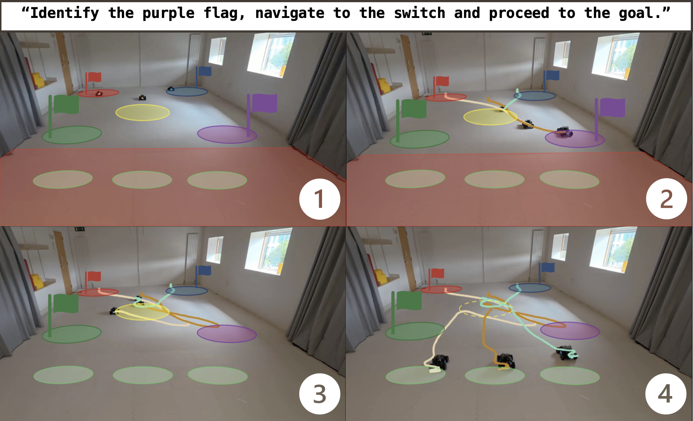
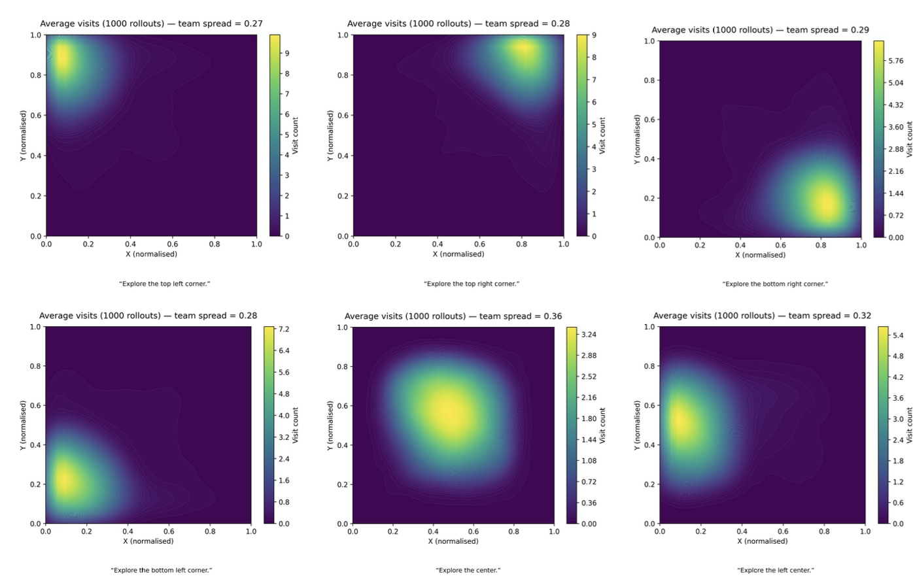
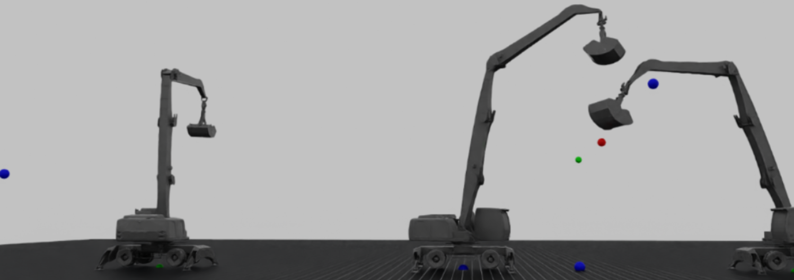
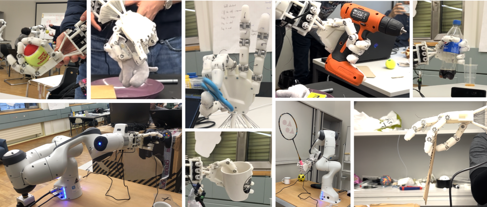
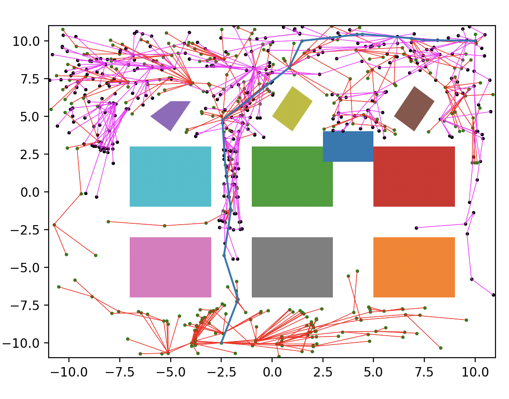

← Back to home
Toggle theme
Robotics Projects
Multi‑robot systems, RL for control, planning, and manipulation. Click on a project to find out more.

Automata‑based reasoning and collaboration for robot teams ·
View demo video
LLM‑guided tasking with RNN/automata execution for coordinated multi‑robot behaviors.

Language‑Driven Multi‑Agent Exploration and Search
Framework for team‑level natural‑language commands, task‑conditioned rewards, onboard perception, and a cooperative memory map.

Multi‑task RL for material handling
Single policy for navigation, waypoint tracking, and dynamic throwing on a simulated Liebherr platform.

Dexterous tendon‑driven robotic hand
11‑DoF tendon hand with snap‑fit joints; teleop, optimization‑based tracking, and RL for ball‑rolling tasks.

Path planning with Bi‑RRT*
High‑performance simulation for obstacle navigation using bidirectional RRT*.